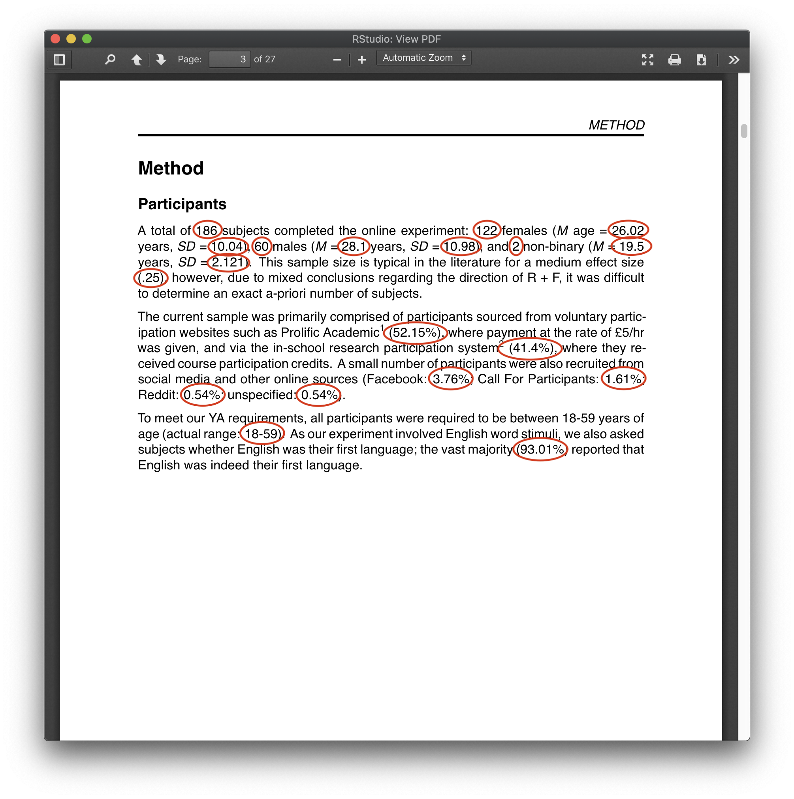
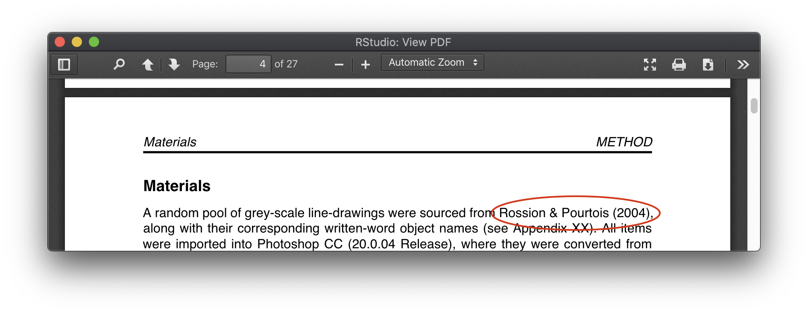
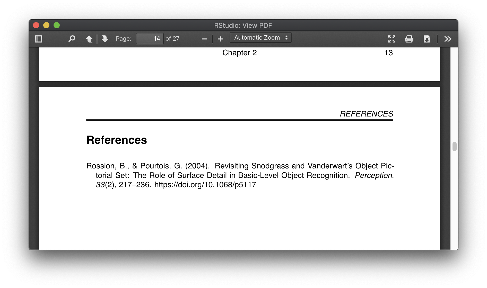

5 reasons to write documents in R.

Writing documents using R code...it might sound crazy, but there are so many things R can do that Word and Google Docs simply can't. Here we cover the top 5 reasons you should switch to R for writing papers.
If you've completed some of the other guides, you should already be familiar with R Scripts - they're a type of file we use to write R code, which we then execute in the Console. There's another type of file though - RMarkdown - and this is what we use to create documents in R. When we're done, we can easily export the document to PDF or HTML to share with others (or Word, if you really must). The RMarkdown file type offers a plethora of features and benefits:
1. Reports are always linked to your data:
This is by far the most powerful feature of RMarkdown files. Whenever you use numerical values in your writing, exact values can be piped in directly from the data:
Take the above demographics section, for instance. Every value circled is piped directly from the data, so we never need to worry about its' accuracy. If we make a change during analysis - maybe we add a bunch more data - no problem, it'll update all these values automatically!
This allows you be more descriptive of your sample and data, as you never have to worry about re-calculating things. Take the second paragraph, where the source of our participants is broken down into percentages. If we were to gain more data, it would be a real pain to have to re-caculate all of these again...now we don't have to.
There are even packages that write correctly-formatted analysis results for you (e.g. ANOVA results, again, directly from the data):

As well as giving you peace of mind that all of your values are accurate and up-to-date, writing your reports in this way is also great from an open science perspective. You can share your finished RMarkdown file with anyone; they will be able to view the final report, but also all of your workings (if you so wish) - from the first step of importing your data all the way to the write-up.
2. It can write references for you:
If you provide a RStudio with a .bib references library (I use Zotero, but there's also Mendeley etc.), along with a file that contains your desired formatting (APA, in my case), it'll do the rest of the work for you!
Your ref management software will have a 'citekey' next to each paper; this is usually the first authors surname and the year published. When used in RMarkdown like this:
A random pool of grey-scale line-drawings were sourced from @rossion2004, along with...
...the correctly-formatted reference will be shown in your document:
Your references list at the end of the document will automatically be populated with any papers you cite in text:
This is a huge time saver. Not only does it save you from having to manually type out your references, but it means you don't have to manually cross-reference your in-text references with your references list. If you make a change in-text, removing a reference in the process - it'll also automatically remove from your references list! This also means you don't have to 'curate' the references found in your ref management software. My exported ref library contains a lot of papers (not all of which are relevant to what I'm writing at the time) - but that's fine, as only the ones we cite will be shown in the document.
3. It can output correctly formatted tables with ease:
Can't stand using Word for tables.
Use a number of tiny code snippets to lock-in your formatting:
E.g. hold position / scale down / scale down + landscape.
Values can be piped into tables directly from your data, so will always be up-to-date. Any changes - they change too!